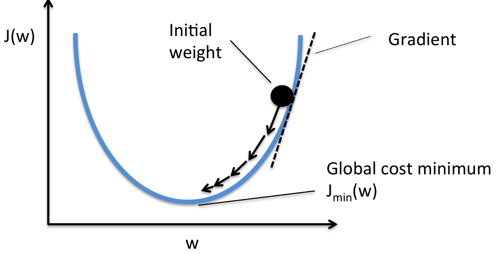
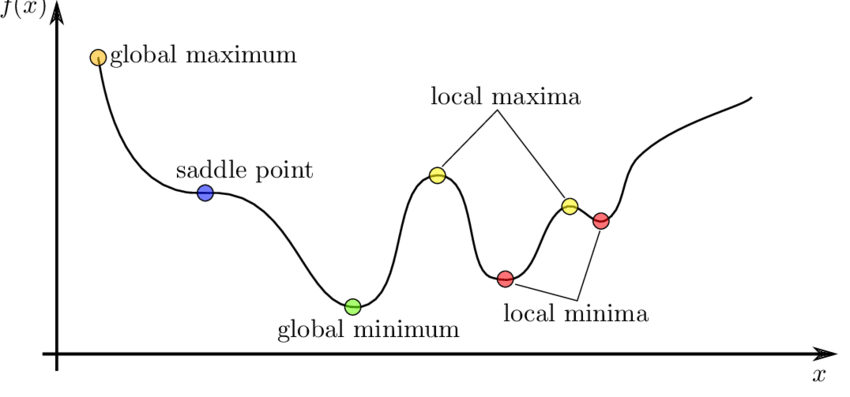
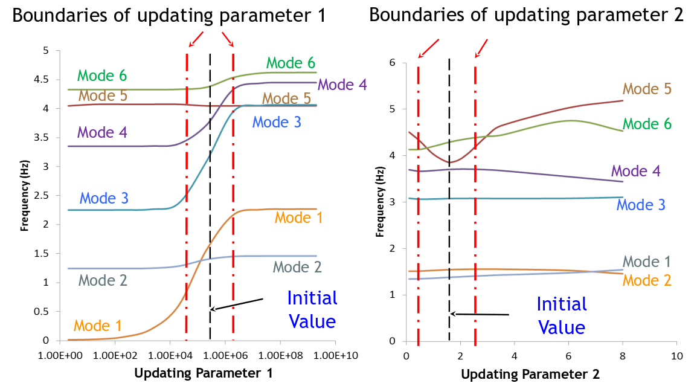
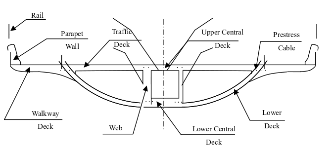
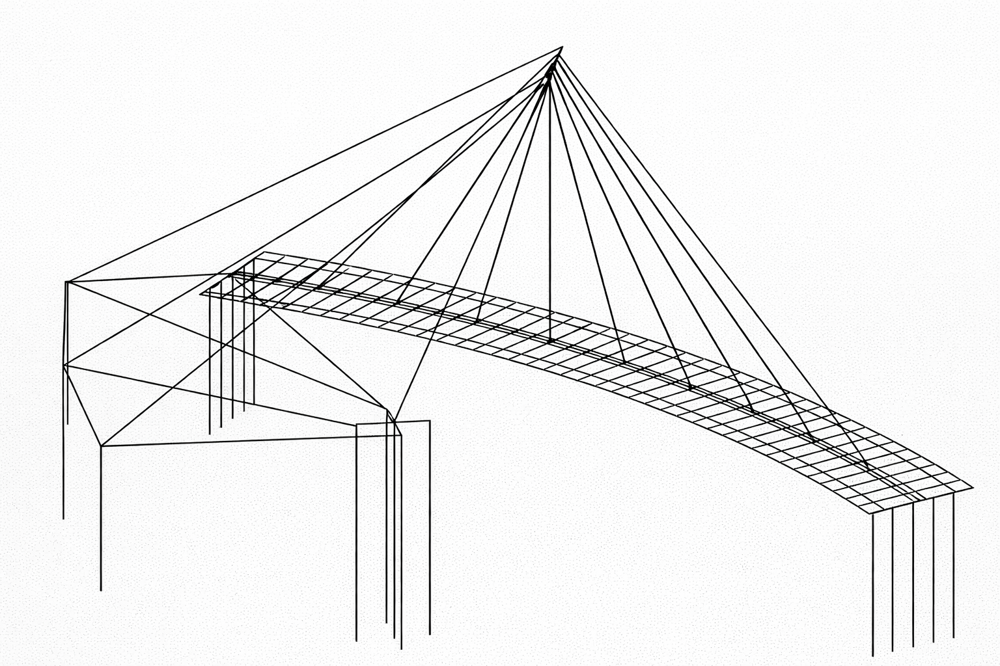
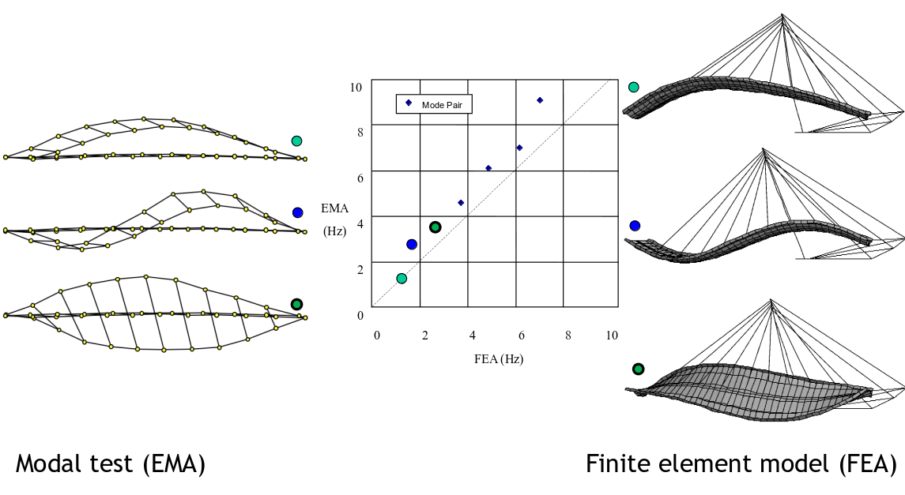
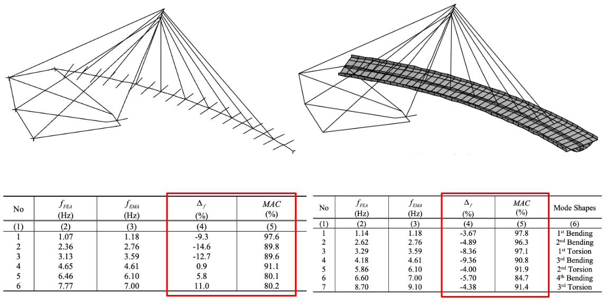
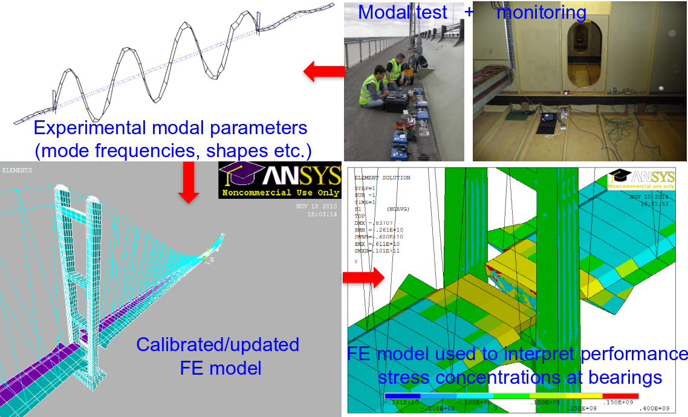

FEMU in SId context
- Vast majority of literatures used modal parameters for FEMU.

Republic Plaza, Singapore
First mode natural frequency estimates (Hz)
| Architect (a priori) |
0.146 |
| SAP90 |
0.185 / 0.191 |
| AVT (unoccupied) |
0.191 / 0.199 |
| AVT (occupied) |
0.184 / 0.194 |
| ANSYS (a-posteriori) |
0.191 / 0.214 |
| Empirical f = 46/H (Ellis) |
0.164 |
90% of consultant FEMs underpredict tall-building 1st-mode frequencies (CPP, Colorado).
FEM Updating Techniques
First (macro) step uses domain expertise; second (micro) step uses mathematical optimisation.
Data sources: \(f_{i,\mathrm{FEM}}\) and \(f_{i,\mathrm{EMA}}\)
Macro model updating: coarse elements and global model consistency, based on experience and engineering judgement
Micro model updating: fine parameter tuning and error localization, using optimisation algorithm
Modal Data and Residuals
\[r_{f,i} = f_i^{\text{model}}(\mathbf{p}) - f_i^{\text{exp}}\]
For each mode \(i\), where \(f_i^\text{exp}\) is measured and \(f_i^\text{model}(\mathbf{p})\) is from the FE model with parameters p
\[
\text{MAC}(\phi_i^{\text{model}}, \phi_j^{\text{exp}}) = \frac{|\boldsymbol\phi_i^{\text{model},T} \boldsymbol\phi_j^{\text{exp}}|^2}{(\boldsymbol\phi_i^{\text{model}, T} \boldsymbol\phi_i^{\text{model}})(\boldsymbol\phi_j^{\text{exp}, T} \boldsymbol\phi_j^{\text{exp}})}
\]
\[r_{\text{mac}, i} = 1 - \text{MAC}(\phi_i^{\text{model}}(\mathbf{p}), \phi_i^{\text{exp}})\]
Cost Function
\[
F(\mathbf{p}) = \sum_{i=1}^{N_f} \gamma_i\, r_{f,i}^2(\mathbf{p})
+ \sum_{i=1}^{N_\phi} \beta_i\,\bigl[1-\mathrm{MAC}_i(\mathbf{p})\bigr]^2
\]
where \(\gamma_i,\beta_i\) are weight factors for the \(i\)-th frequency and mode shape residual, respectively. (Weights can be chosen to normalize scales or reflect confidence.)
Minimizing \(F(\mathbf{p})\) (often under parameter bounds) drives the FE model to agree with the measurements.
Weighting Schemes
Choosing weights is important because frequencies and mode shapes have different units and sensitivities.
A common approach is to normalize each frequency residual by its value or to emphasize lower modes (e.g. set \(\gamma_1=1\) for the first mode and smaller \(\gamma_i\) for higher modes) because lower modes are often most reliably measured.
Mode shape residuals also carry weights \(\beta_i\) to reflect their relative importance.
Optimisation: Core Idea
Goal: find model parameters that give the “best” fit to data while satisfying constraints.
\[
\mathbf{p}^\star = \arg\min_{\mathbf{p}\in\Omega} J(\mathbf{p})
\]
where:
- \(\mathbf{p}\): parameter vector (design/update variables)
- \(J(\mathbf{p})\): objective (misfit/cost) function
- \(\Omega\): feasible set (bounds/physical constraints)
Optimisation: How it works

Local vs Global Minimum

Optimisation Algorithms for FEMU
Gradient-based (local): Gauss-Newton, Levenberg-Marquardt, Fast near a good initial guess, possibly trapped in local minima
Derivative-free (local/global): Nelder-Mead, Pattern Search, Useful when gradients are noisy/unavailable
Metaheuristic (global search): Genetic Algorithm (GA), Better global exploration, Higher computational cost
MATLAB functions for Optimisation
| Gauss-Newton (local) |
lsqnonlin |
| Levenberg-Marquardt (local) |
lsqnonlin with optimoptions('lsqnonlin','Algorithm','levenberg-marquardt') |
| Nelder-Mead |
fminsearch |
| Pattern Search |
patternsearch |
| Genetic Algorithm (GA) |
ga |
Sensitivity Analysis in FEMU
Sensitivity of cost wrt parameter \(p_i\): \[
S_i = \frac{\partial J}{\partial p_i}
\]
- Large \(|S_i|\) means parameter \(p_i\) has strong influence on fit quality, Small \(|S_i|\) means parameter is weakly observable from current data.
- Use sensitivity ranking to select/update only influential parameters.
Sensitivity of Modal Frequencies

FEMU Example: SAFTI Link Bridge
FEMU Example: SAFTI Link Bridge
FEMU Example: SAFTI Link Bridge

FEMU Example: SAFTI Link Bridge

FEMU Example: SAFTI Link Bridge

FEM Modelling Complexity

Best Practice
Features:
- First model the structure well without leaving out a major feature
- Choose uncertain \(P\) to which important \(R\) are most sensitive
- Use best judgement to get starting values
Problems:
- Solutions strongly depend on model errors and parameter selection
- Boundary conditions are hard to get right
- Avoid too many P to update with two few (insensitive) R
- Avoid poorly conditioned solution due to low sensitivities
Digital Twin
Measuring without sensors

Closure
In practice, FEMU is useful in many practical scenarios: response prediction in an extreme loading, simulating a modification in the structure, etc.
For SHM purpose, FEMU is the holy grail in Structural Health Monitoring as an accurately updated FEM model has potential to answer all of L1 (existence), L2 (Localisation), and L3 (quantification) problems
There are some literature reporting levels of successes, however, FEMU are not commonly used in practice due to its inaccuracy mainly caused by modelling errors (especially on bridge bearings)
Breakthrough can be possible in the future, using Input-Ouput FEMU, AI supported FEMU, etc.